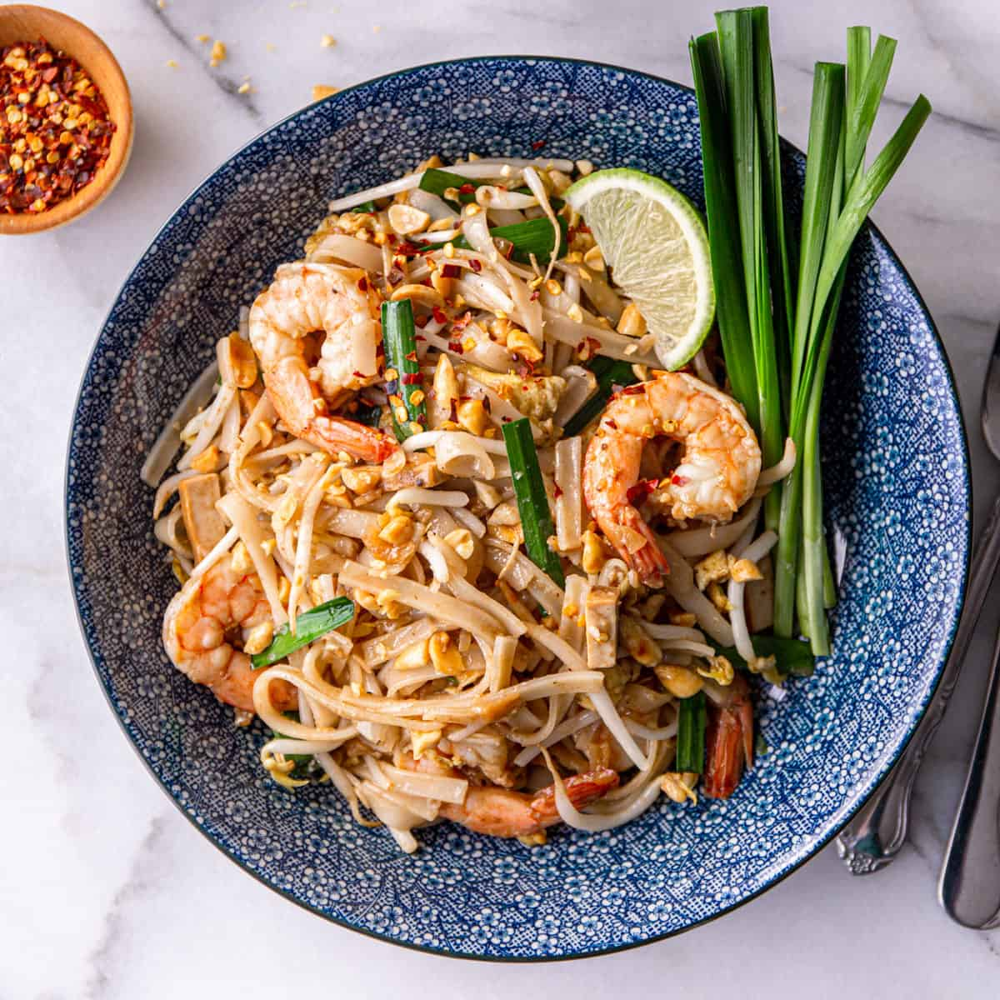
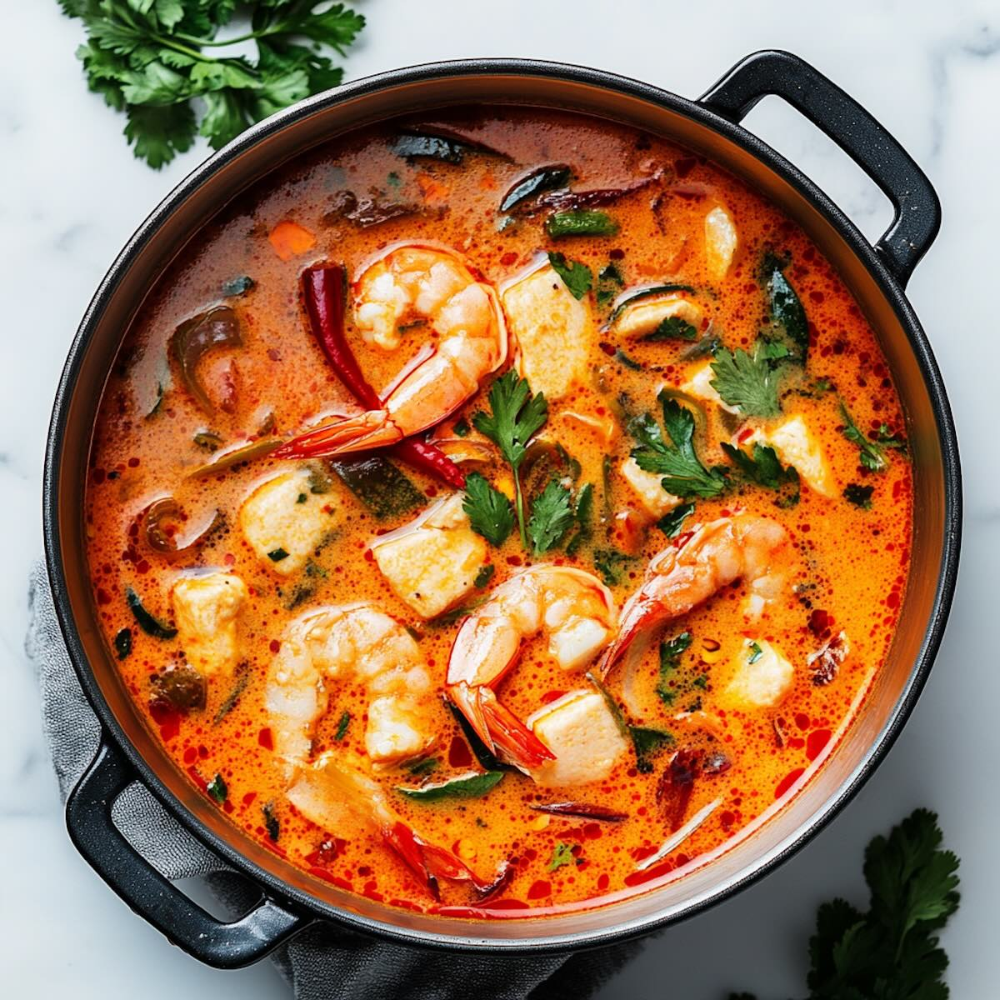
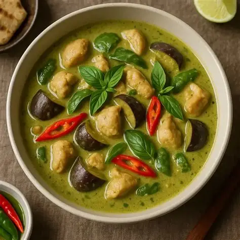
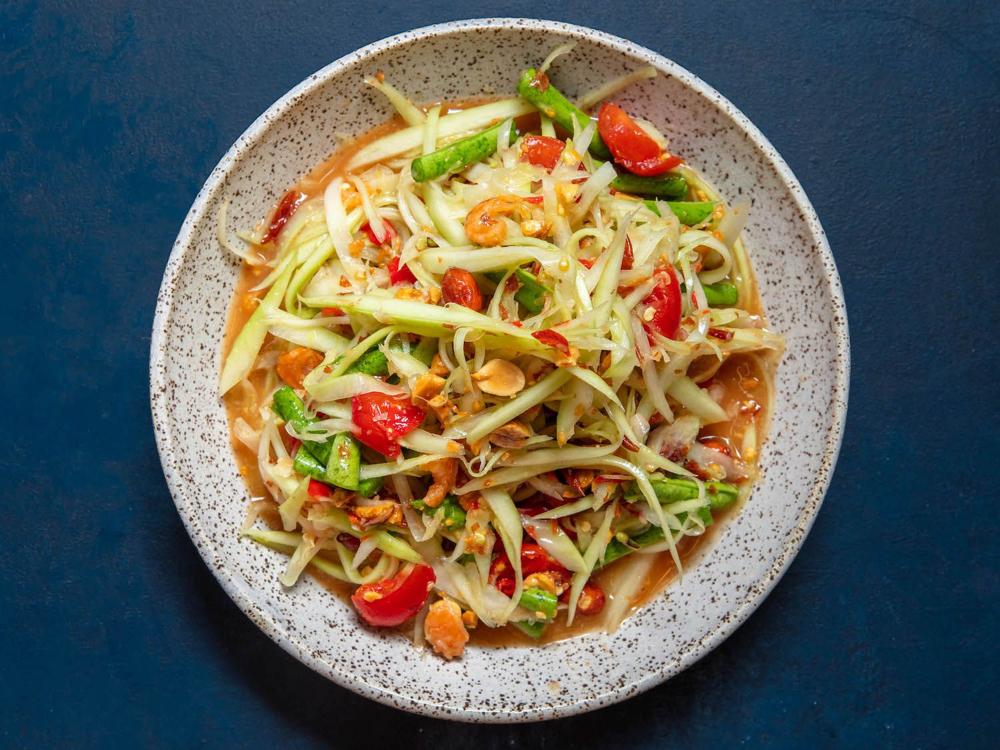
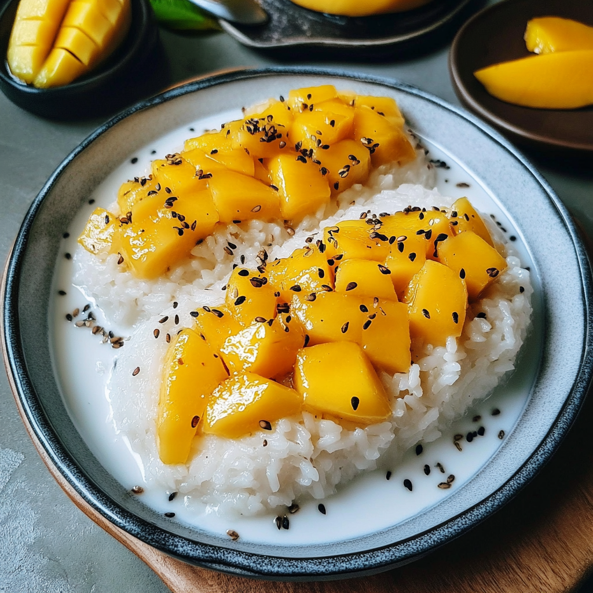

Inverno
- Dicembre
- Gennaio
- Febbraio



Noodles di riso saltati con uovo, tofu o gamberi, germogli e una salsa agrodolce con tamarindo.

Zuppa aromatica e piccante, spesso con gamberi, citronella, galanga e foglie di lime kaffir.

Curry verde profumato preparato con latte di cocco, pasta di curry e verdure, spesso accompagnato da riso.

Insalata fresca e piccante di papaya verde pestata con lime, peperoncino, pomodoro e arachidi.
Curry ricco e delicato con influenze persiane, spesso preparato con carne, patate, arachidi e spezie.

Riso glutinoso al latte di cocco servito con mango maturo e talvolta semi di sesamo o fagioli croccanti.